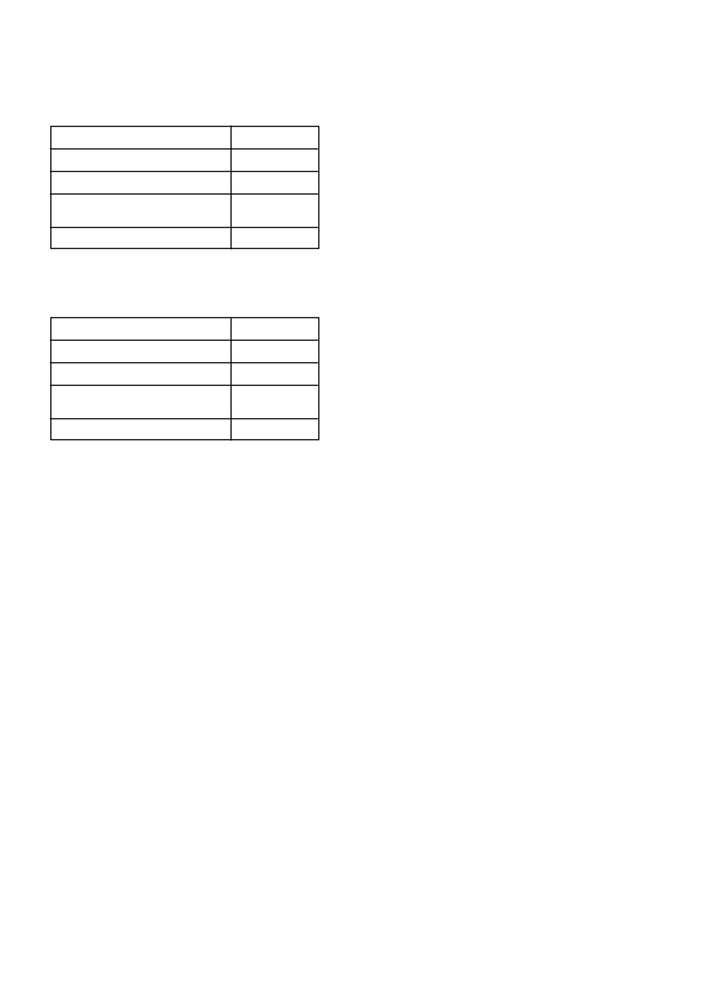

CAMIX PLUS
/ 2
sulfonanilied onkruiddoders en imidasolinoon onkruiddoders
wat almal baie sensitief is vir grond pH fluktuasies.
Kontak u plaaslike SYNGENTA verteenwoordiger voordat
op enige bekalkings program besluit word om gewas
keuses en gewas beskermings programme te bespreek.
4.3
Faktore wat onkruidbeheer beïnvloed:
4.3.1 Vooropkoms toediening:
•
Goeie saadbed voorbereiding sonder kluite en onkruide is ‘n
voorvereiste vir goeie vooropkoms onkruidbeheer.
•
Verlengde droë grond toestande na ‘n
vooropkoms
toe-
diening mag verlaagde beheer van ontkiemende onkruide tot
gevolg hê.
•
In gronde met abnormale hoë organiese materiaal inhoud
of gronde met organiese residue op die grond oppervlakte
soos bv gebrande organiese materiaal of stoppels sal
CAMIX
PLUS
‘n verkorte nawerking hê.
•
Moet nie
CAMIX PLUS
toedien onder stremmingstoestande
nie bv versuiptoestande, baie koue toestande, oormatige reën,
swak kunsmistoediening, lae pH, ens.
•
Tenkmengsels van
CAMIX PLUS
met organofosfate bv.
chlorpirifos moet vermy word aangesien dit kan lei tot gewas
skade.
•
CAMIX PLUS
moet nie vooropkoms toegedien word waar
vloedbesproeing gebruik word.
5. GEBRUIKSAANWYSINGS:
Gebruik slegs soos aangedui.
5.1
Verenigbaarheid:
CAMIX PLUS
is verenigbaar met KARATE ZEON (L6330) en
KARATE (L3752).
5.2
Verdunningswater:
Gebruik slegs skoon water en buffer met ‘n geregistreerde buffer.
5.3
Menginstruksies:
Vul die spuit- of mengtenk met skoon water en aktiveer die
roerder. Roer aanhoudend gedurende die meng- en toedienings-
proses. Indien die roer proses vir langer as 5 min gestaak word,
moet die spuitmengsel hersuspendeer word. Sodra die spuit- of
mengtenk halfvol met water is, voeg
CAMIX PLUS
stadig by en
roer totdat dit volledig gedispergeer het.
Wanneer in ‘n tenkmengsel gebruik word, moet
CAMIX PLUS
eerste by die water gevoeg word. Hierna kan die emulgeerbare
konsentrate (EC) soos KARATE EC bygevoeg word. Maak die
tenk vol met water tot by die verlangde volume terwyl aan-
houdend geroer word.
5.4
Grondtoediening:
CAMIX PLUS
moet op dieselfde dag wat die mengsel aange-
maak is, toegedien word.
Dien toe deur middel van ‘n trekkergemonteerde spuitbalk wat
korrek gekalibreer is met aanhoudende roering om ten minste
200 - 300
l
spuitmengsel/ha te lewer. Voorkom oorvleueling van
spuitwydtes.
In die geval van sekere vooropkoms bespuitings met hidrou-
liese spuitpunte mag die spuitvolume verlaag word na ‘n 100
l
spuitvolume/ha. Die gebruik van geregistreerde benatters teen
die korrekte dosisse, spuitpunt
spasiëring en effektiewe bedek-
king asook spuitpunt grootte word baie belangrik. Die nalaat
van hierdie faktore sal beslis tot verswakte beheer van sekere
onkruide lei.
Platwaaier hidrouliese spuitpunte (110º) word aanbeveel vir opti-
male bedekking.
Indien nie aan hierdie voorsorg maatreëls gehoor gegee word nie,
kan die registrasiehouer nie verantwoordelik gehou word vir enige
gevolglike verlies as gevolg van swak onkruidbeheer of gewas
skade nie.
4.2
Opvolggewasse:
Om skade aan opvolggewasse te voorkom, moet die volgende
wagperiodes toegepas word:
i)
Indien die toegediende atrasien inhoud minder as 500 g ai/ha
is:
Koring en gars
1 maand
Graansorghum
2 maande
Aartappels
6 maande
Sojabone, droëbone, grondbone,
9 maande
sonneblom en katoen
Alle ander gewasse
24 maande
ii)
Indien die toegediende atrasien inhoud meer as 500 g ai/ha
is maar minder as 1000 g ai/ha mag die wagperiode na 9
maande verkort word behalwe op die sanderige gronde van
die Noordwes Provinsie en Noord-Westelike Vrystaat, wat 0 -
10 % klei bevat.
Koring en gars
9 maande
Graansorghum
9 maande
Aartappels
9 maande
Sojabone, droëbone, grondbone,
9 maande
sonneblom en katoen
Alle ander gewasse
24 maande
Bogenoemde wagperiodes geld slegs indien die korrekte hoeveel-
heid
CAMIX PLUS
toegedien is en normale of bogemiddelde
reënval gedurende die seisoen waarin die toediening gemaak is
en daarna, voorgekom het.
Alle wisselbougewasse moet slegs na ‘n deeglike grondbe werking
geplant word. Aangesien die produk gemetaboliseer word deur
mikrobiese aktiwiteit, mag periodes van lae mikrobiale aktiwiteit
die residuele werking van
CAMIX PLUS
verleng.
Waarskuwing: Moontlike beskadiging van triasien sensi-
tiewe gewasse
•
Waar gronde met kalk behandel is om die pH te verhoog mag
die moontlikheid van gewas beskadiging dramaties verhoog
in gronde waar triasienes voorheen toegedien is. Dit gebeur
as gevolg van die triasien molekule wat op die klei kompleks
vervang word met kalsium katione en die triasien dus meer
beskikbaar word in die grondwater kompleks.
•
Geen triasien sensitiewe gewasse moet na kalk toedienings
geplant word nie. Dit is selfs van toepassing indien triasiene
teen wisselbou dosisse gespuit is in vorige jare. Slegs mielies
moet geplant word direk na kalk toedienings.
•
Triasien sensitiewe gewasse sluit in alle breëblaargewasse
soos die boon gewasse en sonneblomme asook alle klein-
graangewasse soos koring.
•
Hierdie waarskuwing waarborg egter nie dat geen skade aan
selfs mielies in die daaropvolgende aanplanting sal voorkom
nie aangesien groot volumes triasiene beskikbaar mag raak
afhangende van die volume kalk wat toegedien word en die
reënval wat kan voorkom.
Waarskuwing: Moontlike verhoogde effektiwiteit, fitotok-
sisiteit en verlengde nawerking
•
‘n Verhoging in die grond pH na vlakke bokant 7 skep toe-
stande waar verhoogde effektiwiteit en gepaardgaande verla-
ging in selektiwiteit kan voorkom. Hierdie verhoogde pH vlakke
kan ook verlengde grondnawerking tot gevolg hê wat veral
onder besproeiing die opvolg gewaskeuse mag beïnvloed.
•
Waar grond pH verstellings gedoen is, moet gelet word op die
gebruik van sulfoniel ureum onkruiddoders, triazolopirimi dien
